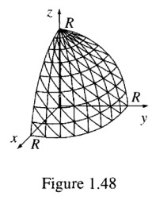

电动力学整理*
迎战小恶魔
Table of Contents
- 考试预判
- 矢量分析
- 电磁基本量
- Laplace 方程解法
- 光波传导 不考
- 相对论
- 作业解析
- Hw1
- Hw2
- Problem 1: Electric Field in Spherical Coordinates easy
- Problem 2: Vector Potential and Magnetic Field in Cylindrical Coordinates easy
- ? Problem 3: Electric Field in the Overlapping Region of Two Spheres
- Problem 4: Electric Field, Charge Density, and Total Charge easy
- Problem 5: Magnetic Field of a Circular Current Loop
- TODO Problem 6: Magnetic Field from a Finite Straight Current-Carrying Wire
- Hw3
- Problem 1: Prove the Mean Value Theorem for the 2D Laplace Equation: hard
- Problem 2: Image Charge Problem for a Point Charge Inside a Spherical Conducting Shell:
- Problem 3: Fourier Transform of Dirac Delta Function and Heaviside Step Function:
- Problem 4: Potential Distribution Inside a Cube
- Problem 5: Potential and Surface Charge Distribution for a Sphere with Surface Potential
- Problem 6: Dipole Moment of a Sphere with Surface Charge Density:
- Hw4
- Hw5
- Problem 1: Magnetic Flux and Induced EMF in a Rectangular Loop Near a Long Straight Current-Carrying Wire
- Problem 2: Mutual Inductance of a Small Loop Above a Large Loop
- Problem 3: RLC Circuit
- Problem 4: Poynting Vector in a Vibrating Parallel Plate Capacitor
- Problem 5: Reflection and Transmission of a Plane Wave on a Dielectric Film
…持续更新中…
发现错误请私我，会非常感谢你
PDF: 文件不一定最新
答案还在校对，部分是AI直出
目录很方便 ->
考试预判
不考复杂计算，电动本身考得少，电磁波传播界面透射反射不考
可能不给但考的公式
| Maxwell | 无需多言 | \(\nabla\cdot E=\frac{\rho}{\epsilon}\) | |
| \(\nabla\times E=-\frac{\partial B}{\partial t}\) | |||
| \(\nabla\cdot B=0\) | |||
| \(\nabla\times B=\mu_{0} \left( J+\epsilon \frac{\partial E}{\partial t} \right)\) | |||
| BS 公式 | 位置电流算磁场 | \(\mathrm{d}\mathbf{B} = \frac{\mu_0}{4\pi} \frac{I \mathrm{d}\mathbf{l} \times \hat{\mathbf{r}}}{r^2}\) | 作业 |
| Lorent 变换 |
矢量分析
矢量运算：加减法略、点乘对应乘（在直角坐标系下）、叉乘行列式算
微分算符号 \(\nabla\) 与名词辨析：
| 梯度 | gradient | \(\nabla f\) | 作用标量得矢量 | \(=(\partial_{x}f_x,\partial_{y}f'_y,\partial_{z}f'_z)\) |
| 散度 | divergence | \(\nabla \cdot \vec{A}\) | 作用矢量得标量 | \(=\partial_{x}A_x+\partial_{y}A'_{y}+\partial_{z}A'_{y}\) |
| 旋度 | curl | \(\nabla \times \vec{A}\) | 作用矢量得矢量 |
多次运算
场论微积分公式——换开为闭
基本公式－可类比微积分基本公式
\begin{equation} \label{eq:fund} \int_{\mathscr{P}_a}^{\mathscr{P}_b}\nabla f \cdot \mathrm{d} \mathbf{l}=f(b)-f(a) \end{equation}上式a b 重合（或闭合线积分 \(\oint_\mathscr{P}\nabla f=0\)）
体上散度为闭合面积分—— Gauss 公式 面上旋度为闭合线积分—— Stokes 公式
DONE 曲线坐标系——换系
可记可不记属于数学补完，放公式表里
Dirac 函数——描述奇点积分工具
重要公式：
\begin{equation} \label{eq:2} \nabla\cdot \left( \frac{\hat{\mathbf{r}}}{r^2} \right) \overset{\text{换系}}{=}\frac{1}{r^2}\frac{\partial }{\partial r}\left( r^2 \frac{1}{r^2} \right)=4\pi \delta(r) \end{equation}特色
\begin{gather*} \cos \theta_1 \cos \theta_2 + \sin \theta_1 \sin \theta_2 \rightarrow \vec{A} \cdot \vec{B}\\ \cos \theta_1 \sin \theta_2 − \sin \theta_1 \cos \theta_2 \rightarrow \vec{A} \times \vec{B} = ... = (0,0,x_1y_2-x_2y_1) \end{gather*}公式表手册
应当会给一些公式
Cartesian (直角坐标系)
Cylindrical (柱坐标系, r, φ, z)
Spherical (球坐标系, r, θ, φ)
柱坐标系
\begin{gather*} \frac{\partial }{\partial r}\left[ r^2 \frac{\partial V}{\partial r} \right]+\frac{1}{\sin \theta}\frac{\partial }{\partial \theta}\left[ \sin\theta \frac{\partial V}{\partial \theta} \right]=0\\ \end{gather*}中文书简单题
电磁基本量
镜像电荷法
作业
中文书

边界条件：
Laplace 方程解法
更一般的讲法应当是 Possion 方程，区别是 Laplace 这是一定要掌握方法流程的
方程不忘：
\begin{gather*} \nabla^2\phi=0 \end{gather*}何时右侧有 \(\rho/\epsilon\) 区域内有电荷，如果是点电荷 ->
BV1S4421D7za
案例试炼
解题结构：
- 写方程：注意有几个区域，有电荷的方程右边有 ρ 项
- 写解：根据对称性，一般是二元柱坐标系，更简单的球坐标。把 Legrendre 多项式写出来
- 边界条件：连续、无穷远
- 代入得到参数值
有电荷：
光波传导 不考
介质变化。主要用边界条件
电动力学中的波传播
波动方程
波动方程描述了电磁波在介质中的传播。对于电场 \( \mathbf{E} \) 和磁场 \( \mathbf{B} \)，它们满足以下波动方程：
\[ \nabla^2 \mathbf{E} - \frac{1}{c^2} \frac{\partial^2 \mathbf{E}}{\partial t^2} = 0 \] \[ \nabla^2 \mathbf{B} - \frac{1}{c^2} \frac{\partial^2 \mathbf{B}}{\partial t^2} = 0 \] 其中，\( \nabla^2 \) 是拉普拉斯算符，\( c \) 是光速。
跨介质边界条件
当电磁波在两种不同的介质之间传播时，跨介质的边界条件如下：
- 电场的切向分量在边界处是连续的： \[ \mathbf{E}_1^{\parallel} = \mathbf{E}_2^{\parallel} \]
- 磁场的切向分量在边界处是连续的： \[ \mathbf{B}_1^{\parallel} = \mathbf{B}_2^{\parallel} \]
- 电场的法向分量的跳跃与自由电荷密度成正比： \[ \hat{n} \cdot (\mathbf{D}_2 - \mathbf{D}_1) = \sigma_{\text{free}} \]
- 磁场的法向分量的跳跃与自由电流密度成正比： \[ \hat{n} \cdot (\mathbf{B}_2 - \mathbf{B}_1) = 0 \]
折射率虚部
介质的折射率 \( n \) 可能具有虚部 \( k \)，当波在介质中传播时，会出现衰减现象。折射率虚部表示波的衰减程度： \[ n = n' + i k \] 其中，\( n' \) 是折射率的实部，\( k \) 是虚部。虚部的存在导致波的幅度随距离的增加而衰减，因此在吸收介质中，波的传播速度减慢且波的强度逐渐减小。
相对论
- 光速不变： Lorentz 变换
- 相对性原理：物理规律都不变
钟慢： \(t=\frac{t_0}{\sqrt{1-\frac{v^2}{c^2}}}\) 尺缩： \(l=l_0\sqrt{1-\frac{v^2}{c^2}}\)
变化（38/54）
A particle of mass \(m\) whose total energy is twice its rest energy collides with an identical particle at rest. If they stick together, what is the mass of the resulting composite particle? What is its velocity?
- Total energy of the moving particle:
- The total energy \( E \) is given by: \[ E = \gamma mc^2 \] where \( \gamma = \frac{1}{\sqrt{1 - v^2/c^2}} \) is the Lorentz factor.
- Given \( E = 2mc^2 \), we solve for \( v \): \[ \gamma = 2 \implies \frac{1}{\sqrt{1 - v^2/c^2}} = 2 \implies 1 - v^2/c^2 = \frac{1}{4} \] \[ v^2 = \frac{3}{4}c^2 \implies v = \frac{\sqrt{3}}{2}c \]
- Momentum of the moving particle:
- The relativistic momentum \( p \) is: \[ p = \gamma mv = 2m \cdot \frac{\sqrt{3}}{2}c = \sqrt{3}mc \]
- Total momentum of the system before collision:
- The stationary particle has no momentum, so the total momentum is: \[ p_{\text{total}} = \sqrt{3}mc \]
- Total energy of the system before collision:
- Energy of the moving particle: \( 2mc^2 \)
- Energy of the stationary particle: \( mc^2 \)
- Total energy: \[ E_{\text{total}} = 2mc^2 + mc^2 = 3mc^2 \]
- Mass of the composite particle:
- Using the invariant mass relation: \[ E_{\text{total}} = M c^2 \implies M = \frac{E_{\text{total}}}{c^2} = \frac{3mc^2}{c^2} = 3m \]
- Velocity of the composite particle:
- Using the momentum-energy relation: \[ p_{\text{total}} = M v_{\text{composite}} \implies v_{\text{composite}} = \frac{p_{\text{total}}}{M} = \frac{\sqrt{3}mc}{3m} = \frac{\sqrt{3}}{3}c \]
- Mass of the composite particle: \( M = 3m \)
- Velocity of the composite particle: \( v_{\text{composite}} = \frac{\sqrt{3}}{3}c \)
双生子
Problem 12.16 The twin paradox revisited. On their 21st birthday, one twin gets on a moving sidewalk, which carries her out to star X at speed her twin brother stays home. When the traveling twin gets to star X, she immediately jumps onto the returning moving sidewalk and comes back to earth, again at speed She arrives on her 39th birthday (as determined by her watch).
- How old is her twin brother (who stayed at home)? (a)
- How far away is star X? (Give your answer in light years.) (b)
- What are the coordinates \((x, t)\) of the jump (from outbound to inbound sidewalk) in \(S\)? (c)
- What are the coordinates \((\bar{x}, \bar{t})\) of the jump in \(\bar{S}\)? (d)
- What are the coordinates \((\bar{x}, \bar{t})\) of the jump in \(\bar{\bar{S}}\)? (e)
- If the traveling twin wanted her watch to agree with the clock in \(\bar{S}\), how would she have to reset it immediately after the jump? If she did this, what would her watch read when she got home? (This wouldn't change her age, of course—she's still 39—it would just make her watch agree with the standard synchronization in \(\bar{S}\).) (f)
- If the traveling twin is asked the question, "How old is your brother right now?", what is the correct reply (i) just before she makes the jump, (ii) just after she makes the jump? (Nothing dramatic happens to her brother during the split second between (i) and (ii), of course; what does change abruptly is his sister's notion of what 'right now, back home' means.) (g)
- How many earth years does the return trip take? Add this to (ii) from (g) to determine how old she expects him to be at their reunion. Compare your answer to (a). (h)
作业解析
Hw1
许多题方法太难（在回想自己简单的方法中）
(Textbook) Problem 1.13, 1.49, 1.53, 1.54, 1.60, 1.61, 1.62 Optional Problems: Derive the curl \(\nabla\times A\) in cylindrical coordinates.
1.13
Problem 1.13 Let \( \mathbf{r} \) be the separation vector from a fixed point \( (x', y', z') \) to the point \( (x, y, z) \), and let \( z \) be its length. Show that
(a) \( \nabla(r^2) = 2\mathbf{r} \).
(b) \( \nabla(1/r) = -\mathbf{\hat{r}}/r^2 \).
(c) What is the general formula for \( \nabla(r^n) \)?
1.49
(a) Let \( F_{1} = x^{2}\hat{z} \) and \( F_{2} = x\hat{\mathbf{x}} + y\hat{\mathbf{y}} + z\hat{\mathbf{z}} \). Calculate the divergence and curl of \( F_{1} \) and \( F_{2} \). Which one can be written as the gradient of a scalar? Find a scalar potential that does the job. Which one can be written as the curl of a vector? Find a suitable vector potential.
(b) Show that \( F_{3} = yz\hat{\mathbf{x}} + zx\hat{\mathbf{y}} + xy\hat{\mathbf{z}} \) can be written both as the gradient of a scalar and as the curl of a vector. Find scalar and vector potentials for this function.
找 F1 的标量势， F2 矢量势。可以各种令为0
\begin{gather*} \nabla\phi=F_1 \rightarrow \\ \begin{cases} \partial_x\phi=0\\ \partial_y\phi=0\\ \partial_z\phi=x^2\\ \end{cases} \phi=x^2z+? \rightarrow \partial_x \phi=2xz, \text{let } \partial_y\phi=-2xz\\ \phi=x^2z-2xzy \end{gather*} \begin{gather*} \nabla \times A =F_2 \Rightarrow\\ \begin{vmatrix} \hat{x}&\hat{y}&\hat{z}\\ \partial_x&\partial_y&\partial_z\\ A_x&A_y&A_z \end{vmatrix}=\\ \begin{cases} \partial_yA_z-\partial_zA_y=x\\ \partial_zA_x-\partial_xA_z=y\\ \partial_xA_y-\partial_yA_x=z \end{cases} \text{let } A_z =0,A=(yz+a,-xz+b,0)\rightarrow-z+\partial_xb-y-\partial_z a=z \end{gather*}1.53
Check the divergence theorem for the function \[ \mathbf{v} = r^{2}\cos\theta \hat{\mathbf{r}} + r^{2}\cos\phi \hat{\boldsymbol{\theta}} - r^{2}\cos\theta\sin\phi \hat{\boldsymbol{\phi}}, \] using as your volume one octant of the sphere of radius \( R \) (Fig. 1.48). Make sure you include the entire surface.

[Answer: \( \pi R^{4}/4 \)] 太难了，最多直角坐标 Divergence theorem:
\begin{equation*} \oint_{\mathscr{S}}E \mathrm{d}S=\int_{\mathscr{V}}\nabla\cdot E \mathrm{d}V \end{equation*}

1.54
Check Stokes' theorem using the function \[ \mathbf{v} = a y \hat{\mathbf{x}} + b x \hat{\mathbf{y}} \] (where \(a\) and \(b\) are constants) and the circular path of radius \( R \), centered at the origin in the \(xy\) plane. [Answer: \(\pi R^2 (b - a)\)]
1.60
1.61

1.62
Hw2
Problem 1: Electric Field in Spherical Coordinates easy
Suppose the electric field in a region is given by \(E=kr^2\hat{r}\) in spherical coordinates, where \(k\) is a constant. Find the charge density \(\rho(r)\) in this region.
给定电场，求电荷密度
Problem 2: Vector Potential and Magnetic Field in Cylindrical Coordinates easy
The vector potential in cylindrical coordinates is given by \(\mathbf{A}=kr^2\hat{\mathbf{r}}\), where \(k\) is a constant. Find the magnetic field \(B\) generated by this vector potential.
求由矢势生成的磁场
? Problem 3: Electric Field in the Overlapping Region of Two Spheres
Two spheres, each of radius \(R\) and carrying uniform charge densities \(+\rho\) and \(-\rho\), respectively, are placed so that they partially overlap. Let \(d\) be the vector from the center of the positive sphere to the center of the negative sphere. Show that the electric field in the region of overlap is constant, and find its value.
两球体问题
考虑两个半径为 \( R \) 的球体，分别携带均匀的电荷密度 \( +\rho \) 和 \( -\rho \)，它们部分重叠，且 \( d \) 为从正电荷球体的中心到负电荷球体的中心的矢量。要求证明在重叠区域内的电场是恒定的，并找出其值。
首先，考虑每个球体的电场。对于球体内部的任意一点，电场的计算可以通过高斯定律来实现。高斯定律表明，对于一个带电的球体，内部的电场由其球心的电荷分布决定。由于球体的电荷密度是均匀的，可以通过高斯面来简化计算。
在每个球体内，电场的大小与距离球心的距离 \( r \) 有关，且电场的方向指向球体的电荷分布。根据高斯定律，电场 \( E_{\text{sphere}} \) 可以表示为：
\[ E_{\text{sphere}} = \frac{1}{\epsilon_0} \frac{q_{\text{enclosed}}}{r^2} \]
其中 \( q_{\text{enclosed}} \) 是包围在高斯面内的电荷量。由于电荷分布是均匀的，电场在球内是从球心到外部的径向电场。
接下来，考虑两个球体的重叠区域。因为电荷分布均匀且大小相等（一个是正电荷，另一个是负电荷），我们可以通过叠加法则来求解电场。在重叠区域，由于两个球体的电场在每一点的方向相反，且大小相等，因此它们的电场将相互抵消。通过叠加法则，两个球体的电场在重叠区域内的结果是常数。
最终，通过计算，得到重叠区域内的电场是恒定的，且其值为：
\begin{equation*} E = \frac{2\rho d}{\epsilon_0} \end{equation*}其中 \( \rho \) 是电荷密度，\( d \) 是从正电荷球体中心到负电荷球体中心的距离，\( \epsilon_0 \) 是真空介电常数。
因此，在重叠区域内，电场的大小是恒定的，并且其值为 \( \frac{2\rho d}{\epsilon_0} \)。
Problem 4: Electric Field, Charge Density, and Total Charge easy
For the electric potential
\begin{equation*} V(r)=A \frac{\mathrm{e}^{-\lambda r}}{r} \end{equation*}find the corresponding electric field \(E(r)\), charge density \(\rho(r)\), and total charge \(Q\).
注意有 δ 总电荷为0,意义是（负）电荷屏蔽
中心一个点电荷，周围电荷对它形成屏蔽
Problem 5: Magnetic Field of a Circular Current Loop
A circular loop of radius \(R\) carries a steady current \(I\). Calculate the magnetic field at a point on the axis of the loop, a distance \(z\) from the center of the loop.
\begin{gather*} d\mathbf{B} = \frac{\mu_0}{4\pi} \frac{I d\mathbf{l} \times \hat{\mathbf{r}}}{r^2}\\ B= \frac{\mu}{4\pi} \frac{I 2\pi R}{r^2}\cos \theta =\frac{\mu I}{2r^2}\frac{z}{r} =\frac{\mu_0 I z^2}{2 \left( R^2 + z^2 \right)^{3/2}} \end{gather*}
计算圆形环路的磁场： BS 公式
考虑一个半径为 \( R \) 的圆形电流环，携带恒定电流 \( I \)，要求计算位于环轴线上，距离环中心为 \( z \) 的点的磁场。
根据安培环路定理，磁场可以通过计算电流元对磁场的贡献来求得。对于圆形电流环，使用比奥-萨伐尔定律来计算磁场。比奥-萨伐尔定律给出小电流元 \( I d\mathbf{l} \) 在空间中某点产生的磁场 \( d\mathbf{B} \)：
\begin{gather*} d\mathbf{B} = \frac{\mu_0}{4\pi} \frac{I d\mathbf{l} \times \hat{\mathbf{r}}}{r^2} \end{gather*}其中 \( \mu_0 \) 是磁场常数，\( d\mathbf{l} \) 是电流元，\( \hat{\mathbf{r}} \) 是从电流元指向磁场计算点的单位向量，\( r \) 是从电流元到观察点的距离。
- 设置坐标系
设定圆形环路位于 \( xy \)-平面内，圆心在原点，电流沿着环路方向流动。我们需要计算位于轴上 \( z \)-轴，距离原点 \( z \) 的点的磁场。由于对称性，磁场将在 \( z \)-轴方向，并且每个电流元对磁场的贡献在 \( xy \)-平面上有一定的对称性，最终磁场只有沿 \( z \)-轴的分量。
- 计算磁场
对于一个圆形电流环，磁场的大小可以通过积分得到。设定圆环上任意一点的电流元 \( d\mathbf{l} \) 形成的磁场贡献为 \( d\mathbf{B} \)，并且对所有电流元积分以得到总磁场。考虑到对称性，所有电流元的垂直分量相加，水平分量则相互抵消。最终，沿着 \( z \)-轴的磁场分量为：
\begin{gather*} B_z = \frac{\mu_0 I R^2}{2 \left( R^2 + z^2 \right)^{3/2}} \end{gather*}其中 \( R \) 是圆形电流环的半径，\( I \) 是电流，\( z \) 是观察点到环心的距离。
最终结果
因此，在轴上距离圆形电流环中心 \( z \) 的点的磁场大小为：
\begin{gather*} B_z = \frac{\mu_0 I R^2}{2 \left( R^2 + z^2 \right)^{3/2}} \end{gather*}TODO Problem 6: Magnetic Field from a Finite Straight Current-Carrying Wire
A straight wire of finite length \(L\) carries a steady current \(I\). Calculate the magnetic field at a point located a distance \(d\) directly above the center of the wire.
考虑一根有限长的直导线，携带恒定电流 \( I \)，要求计算位于导线中心正上方距离为 \( d \) 的点的磁场。
Figure 1: 赵凯华・电磁学
*解答×
假设导线的长度为 \( L \)，电流 \( I \) 恒定，计算磁场时可以使用比奥-萨伐尔定律。比奥-萨伐尔定律表达了由于一个小电流元 \( I \, d\mathbf{l} \) 在空间中产生的磁场 \( d\mathbf{B} \)：
\begin{gather*} d\mathbf{B} = \frac{\mu_0}{4\pi} \frac{I \, d\mathbf{l} \times \hat{\mathbf{r}}}{r^2} \end{gather*}其中 \( \mu_0 \) 是磁场常数，\( d\mathbf{l} \) 是电流元，\( \hat{\mathbf{r}} \) 是从电流元指向磁场计算点的单位向量，\( r \) 是从电流元到观察点的距离。
- 设置坐标系与符号
- 设导线位于 \( x \)-轴上，从 \( x = -L/2 \) 到 \( x = L/2 \)，观察点位于 \( x = 0 \) 轴上方 \( y = d \) 处。
- 对于一个小电流元 \( d\mathbf{l} \)，在 \( x \)-轴上指向 \( x \) 方向，电流元的长度为 \( dx \)，因此 \( d\mathbf{l} = dx \hat{\mathbf{x}} \)。
磁场的计算
- 从比奥-萨伐尔定律得到磁场的表达式。电流元到观察点的距离 \( r \) 为：
- 小电流元 \( d\mathbf{l} = dx \hat{\mathbf{x}} \) 和单位向量 \( \hat{\mathbf{r}} \) 的叉积 \( d\mathbf{l} \times \hat{\mathbf{r}} \) 为：
计算叉积得到的结果为：
\begin{gather*} d\mathbf{l} \times \hat{\mathbf{r}} = \frac{d \, dx}{(x^2 + d^2)^{3/2}} \hat{\mathbf{y}} \end{gather*}因此，磁场的增量为：
\begin{gather*} dB = \frac{\mu_0 I}{4\pi} \frac{d \, dx}{(x^2 + d^2)^{3/2}} \end{gather*}积分计算磁场
对于 \( x \) 从 \( -L/2 \) 到 \( L/2 \) 的积分，得到总磁场：
\begin{gather*} B = \frac{\mu_0 I d}{4\pi} \int_{-L/2}^{L/2} \frac{dx}{(x^2 + d^2)^{3/2}} \end{gather*}这个积分可以通过标准积分公式求解，结果为：
\begin{gather*} B = \frac{\mu_0 I}{4\pi d} \left[ \frac{x}{d \sqrt{x^2 + d^2}} \right]_{-L/2}^{L/2} \end{gather*}代入边界条件，最终结果为：
\begin{gather*} B = \frac{\mu_0 I}{4\pi d} \left( \frac{L/2}{d \sqrt{(L/2)^2 + d^2}} - \left( -\frac{L/2}{d \sqrt{(L/2)^2 + d^2}} \right) \right) \end{gather*}进一步简化后得到磁场表达式：
\begin{gather*} B = \frac{\mu_0 I}{2\pi d} \cdot \frac{L/2}{\sqrt{(L/2)^2 + d^2}} \end{gather*}
最终结果
磁场在距离导线中心正上方 \( d \) 的点的大小为：
\begin{gather*} B = \frac{\mu_0 I L}{2\pi d \sqrt{(L/2)^2 + d^2}} \end{gather*}延伸 电流方向上一点无磁场
Hw3
Problem 1: Prove the Mean Value Theorem for the 2D Laplace Equation: hard
Prove that for any harmonic function \(\phi(x, y)\) that satisfies the 2D Laplace equation \(\nabla^2\phi = 0\), the value of \(\phi\) at any point is equal to the average of its values over a circle centered at that point.
乱凑法
Taylor 展开：结果中积分为0,只剩下 \(\phi_0\) 项。
天才做法
To prove the Mean Value Theorem for the 2D Laplace equation, we proceed as follows:
- Laplace Equation: In two dimensions, the Laplace equation is given by:
- Introduce Green's Function: We use the Green's function \( G(\mathbf{r}, \mathbf{r}_0) \), which satisfies:
In 2D, the Green's function is:
\begin{equation*} G(\mathbf{r}, \mathbf{r}_0) = \frac{1}{2\pi} \ln \frac{1}{|\mathbf{r} - \mathbf{r}_0|} \end{equation*}- Green's First Identity: Applying Green's first identity, we have:
Since \( \nabla^2 \phi = 0 \), this simplifies to:
\begin{equation*} \int_V \phi \nabla^2 G \, dA = \oint_{\partial V} \left( \phi \frac{\partial G}{\partial n} \right) ds \end{equation*}- Left Side Simplification: Using \( \nabla^2 G = -\delta(\mathbf{r} - \mathbf{r}_0) \), the left side becomes \( \phi(\mathbf{r}_0) \).
- Boundary Integral: Since \( G = \frac{1}{2\pi} \ln \frac{1}{R} \) on the boundary, the normal derivative \( \frac{\partial G}{\partial n} = -\frac{1}{2\pi R} \), and the boundary integral becomes:
- Conclusion: Thus, we find that:
This proves that the value of \( \phi \) at \( \mathbf{r}_0 \) is the average of its values on the circle.
Problem 2: Image Charge Problem for a Point Charge Inside a Spherical Conducting Shell:
Consider a conducting spherical shell with radius \(R\). A point charge \(q\) is placed inside the shell at a distance \(d\) from the center. Find the image charge configuration and determine the potential distribution inside the shell.
球内任意位置场强
- Setup: Consider a spherical conducting shell with radius R, and a point charge q located at a distance d from the center.
- Image Charge: To satisfy the boundary condition that the potential on the conducting shell’s surface is zero, we place an image charge q' = −q R d at a distance R2/d from the center, on the same axis as the real charge.
- Potential Distribution: The potential at a point r inside the shell is given by the superposition of the potentials due to the real and image charges:
where \(r_q = (0, 0, d)\) and \(r_q' = (0, 0, R^2/d)\) .
- Result: This configuration ensures that the potential on the surface of the shell is zero and provides the correct potential inside the shell.
Problem 3: Fourier Transform of Dirac Delta Function and Heaviside Step Function:
Find the Fourier transforms of the Dirac delta function \(\delta(x)\) the Heaviside step function H(x).
傅里叶
\begin{gather*} \mathscr{F}(\delta(x))=\int_{-\infty}^{\infty}\delta(x)\mathrm{e}^{-\mathrm{i}\omega x}\mathrm{d}x=\boxed{1}\\ \mathscr{F}(H)=\int_{-\infty}^{\infty}H(x)\exp(-\mathrm{i}\omega x)\mathrm{d}x=\int_0^{\infty}\exp(-\mathrm{i}\omega x)\mathrm{d}x \\ =\frac{-1}{\mathrm{i}\omega}\exp(-\mathrm{i}\omega x)\bigg|_0^{\infty}=\boxed{\frac{1}{\mathrm{i}\omega}(+\pi\delta(k))} \end{gather*}()里的项是答案没有但，前面积分不收敛专门去查的 第一项： 它表示阶梯函数 H(x) 对于非零频率 k 的贡献，反映了它的非平滑性质。 第二项：这是由于阶梯函数在x=0 处的不连续跳跃，产生了在k=0 处的 delta 函数贡献。 ——GPT
Problem 4: Potential Distribution Inside a Cube
A cube with conducting walls has one face at a constant potential \(V_0\) while all other faces are grounded (at zero potential). Find the potential distribution inside the cube.
解 Laplace 方程:分离变量：对 xyz；方块的边界条件
?
\begin{gather*} \phi(x, y, z) = \frac{4V_0}{\pi^2} \sum_{n=1}^{\infty} \sum_{m=1}^{\infty} \frac{\sin\left(\frac{n\pi x}{a}\right) \sin\left(\frac{m\pi y}{a}\right)}{nm} \left( e^{\sqrt{n^2 + m^2}\pi z/a} - e^{-\sqrt{n^2 + m^2}\pi z/a} \right) \end{gather*}Boundary Conditions \[ \phi(x, y, 0) = V_0,\\ \phi(x, y, z = a) = \phi(x = a, y, z) = \phi(x, y = 0, z) = \phi(x, y = a, z) = 0 \]
Separation of Variables Assumption \[ \phi(x, y, z) = X(x)Y(y)Z(z) \]
Separated Equations \[ \frac{X''(x)}{X(x)} = -k_x^2, \quad \frac{Y''(y)}{Y(y)} = -k_y^2, \quad \frac{Z''(z)}{Z(z)} = k_x^2 + k_y^2 \]
Solutions for X(x) and Y(y) \[ X(x) = \sin\left(\frac{n\pi x}{a}\right), \quad Y(y) = \sin\left(\frac{m\pi y}{a}\right) \] n, m are positive integers
Solution for Z(z) \[ Z(z) = A_{nm} \left( e^{\sqrt{k_x^2 + k_y^2}z/a} - e^{-\sqrt{k_x^2 + k_y^2}z/a} \right) \]
Complete Solution \[ \phi(x, y, z) = \sum_{n=1}^{\infty} \sum_{m=1}^{\infty} A_{nm} \sin\left(\frac{n\pi x}{a}\right) \sin\left(\frac{m\pi y}{a}\right) \left( e^{\sqrt{n^2 + m^2}\pi z/a} - e^{-\sqrt{n^2 + m^2}\pi z/a} \right) \]
Boundary Condition to Determine Coefficients \(A_{nm}\) \[ V_0 = \sum_{n=1}^{\infty} \sum_{m=1}^{\infty} A_{nm} \sin\left(\frac{n\pi x}{a}\right) \sin\left(\frac{m\pi y}{a}\right) \]
Coefficients \(A_{nm}\) \[ A_{nm} = \frac{4V_0}{nm\pi^2} \]
Final Result \[ \phi(x, y, z) = \frac{4V_0}{\pi^2} \sum_{n=1}^{\infty} \sum_{m=1}^{\infty} \frac{\sin\left(\frac{n\pi x}{a}\right) \sin\left(\frac{m\pi y}{a}\right)}{nm} \left( e^{\sqrt{n^2 + m^2}\pi z/a} - e^{-\sqrt{n^2 + m^2}\pi z/a} \right) \]
Problem 5: Potential and Surface Charge Distribution for a Sphere with Surface Potential
A spherical shell has a surface potential given by \(V(\theta)=\cos^2\theta\). Find the potential distribution both inside and outside the sphere using the method of separation of variables. Also, compute the surface charge density on the sphere.
The general solution is: \[ V_{\text{out}}(r, \theta) = \sum_{l=0}^\infty \left( A_l r^{-l-1} \right) P_l(\cos\theta), \] where \( P_l \) are the Legendre polynomials.
Inside the Sphere (\( r \leq R \)): The general solution is: \[ V_{\text{in}}(r, \theta) = \sum_{l=0}^\infty \left( B_l r^l \right) P_l(\cos\theta). \]
Boundary Conditions:
- Continuity of potential at \( r = R \): \( V_{\text{in}}(R, \theta) = V_{\text{out}}(R, \theta) = \cos^2\theta \).
- Surface charge implies discontinuity in the radial derivative: \[ \epsilon_0 \left. \frac{\partial V_{\text{out}}}{\partial r} \right|_{r=R} - \epsilon_0 \left. \frac{\partial V_{\text{in}}}{\partial r} \right|_{r=R} = \sigma(\theta). \]
Using \( \cos^2\theta = \frac{2}{3} P_2(\cos\theta) + \frac{1}{3} P_0(\cos\theta) \), we find: \[ A_0 = \frac{R}{3}, \quad A_2 = \frac{2R^3}{15}, \quad B_0 = \frac{1}{3}, \quad B_2 = \frac{2R^3}{15}. \]
Thus:
\begin{gather*} \begin{cases} V_{\text{out}}(r, \theta) = \frac{R}{3r} + \frac{2R^3}{15r^3} P_2(\cos\theta),\\ V_{\text{in}}(r, \theta) = \frac{1}{3} + \frac{2r^2}{15} P_2(\cos\theta). \end{cases} \end{gather*}The surface charge density is: \[ \sigma(\theta) = \epsilon_0 \left. \left( \frac{\partial V_{\text{out}}}{\partial r} - \frac{\partial V_{\text{in}}}{\partial r} \right) \right|_{r=R}. \] Substituting the expressions for \( V_{\text{out}} \) and \( V_{\text{in}} \): \[ \sigma(\theta) = \epsilon_0 \left( -\frac{R}{3} - \frac{4R}{15} P_2(\cos\theta) \right). \] Using \( P_2(\cos\theta) = \frac{1}{2}(3\cos^2\theta - 1) \), the result is: \[ \sigma(\theta) = -\frac{\epsilon_0 R}{15} \left( 5 + 4(3\cos^2\theta - 1) \right) = \frac{\epsilon_0 R}{15} (3 - 12\cos^2\theta). \]
类似题
A spherical shell has a surface potential given by \(V(\theta)=\cos2\theta\). Find the potential distribution both inside and outside the sphere using the method of separation of variables. Also, compute the surface charge density on the sphere.
?可能有错
分离变量解 Laplace 方程；求电荷 \(\phi\to \sigma\)
Problem 6: Dipole Moment of a Sphere with Surface Charge Density:
A spherical shell of radius \(R\) has a surface charge density \(\sigma(\theta)=\sigma_0 \cos\theta\). Find the dipole moment of the system.
\(\sigma\rightarrow p\) 三维面积元
Hw4
Problem 1: Electric Dipole Moment of a Charge Configuration
Consider a system where four point charges are placed at the vertices of a cube. The charges are q1 = +e, q2 = −2e, q3 = +e, and q4 = −e, with a side length of \(a\). Calculate the electric dipole moment \(p\) of this system, and analyze the direction of the dipole moment.
Problem 2: Magnetic Dipole Moment of a Surface Current on a Sphere
A spherical conductor has a surface current density that varies with latitude angle \(\theta\). The current density is given by \(K(\theta) = K_0 sin^2(\theta)\), where \(K_0\) is the maximum current density at the equator, and θ is the latitude angle. Calculate the magnetic dipole moment \(\mathbf{m}\) of this spherical conductor.
[Hint: Use the formula \(\mathbf{m}=\frac{1}{2}\int_{\mathbf{S}}\mathbf{r}\times \mathbf{K}\mathrm{d}S\) and exploit the spherical symmetry to simplify the computation.]
就是用公式算积分
说要再乘 \(sin\theta\) 因为叉乘（题目没写明白方向）
\begin{gather*} =\sin^4\theta \frac{1}{2}r^3K_0\ldots =\frac{3}{8}\pi^2rK_0\mathbf{\hat{z}} \end{gather*}下面没乘
\begin{gather*} \mathrm{d}S=r^2\sin\theta \mathrm{d}\theta \mathrm{d}\phi\\ \begin{split} \mathbf{m}&=\frac{1}{2}\int_{\mathbf{S}}\mathbf{r}\times \mathbf{K}\mathrm{d}S\\ &=\frac{1}{2}r^3K_0 \int_0^{2\pi} \mathrm{d}\phi\int_0^{\pi} \sin^3\theta \mathrm{d}\theta=\frac{1}{2}r^3K_02\pi\frac{4}{3}\\ &=\frac{4}{3}\pi r^3 K_0 \mathbf{\hat{z}} \end{split} \end{gather*}Problem 3: Energy Stored in a Spherical Capacitor
Consider a spherical capacitor consisting of two concentric spherical conducting shells. The inner shell has radius \(R_1\) and the outer shell has radius \(R_2\). The space between the shells is filled with a dielectric of constant \(\epsilon_r\). The potential difference between the shells is V .
(a) Derive the expression for the capacitance \(C\) of this spherical capacitor.
(b) Calculate the energy stored in the capacitor using the formula \(W=\frac{1}{2}CV^2\).
(c) Verify the result by calculating the energy stored in the electric field using the energy density \(w=\frac{\epsilon_0\epsilon_r}{2}E^2\)
球壳的电容 | 代公式算能量
\begin{gather*} \begin{split} C&=\frac{Q}{V}=\frac{Q}{\int_{R_1}^{R_2}Q/1\pi\epsilon_0 r^2}=\frac{4\pi\epsilon_0}{\frac{1}{R_1}-\frac{1}{R_2}}\\ &= \boxed{4\pi\epsilon_0 \frac{R_1R_2}{R_2-R_1}}\\ \end{split} \end{gather*} \begin{gather*} \begin{split} W&=\frac{1}{2}CV^2=\frac{1}{2}4\pi\epsilon_0 \frac{R_1R_2}{R_2-R_1} V^2\\ &=\boxed{2\pi\epsilon_0V^2 \frac{R_1R_2}{R_2-R_1}} \end{split} \end{gather*} \begin{gather*} W=\int w \mathrm{d} V= \int_{R_1}^{R_2} \left( \frac{\epsilon_0\epsilon_r}{2}E^2 \right) 4\pi r^2 \mathrm{d}r\\ =\frac{1}{2}\int_{R_1}^{R^2} \frac{\epsilon_0\epsilon_r}{2} \left(\frac{Q}{4\pi\epsilon r^2} \right)^2 4\pi r^2 \mathrm{d}r = \\ =\frac{Q^2}{8\pi\epsilon_r\epsilon_0}\left( \frac{1}{R_1}-\frac{1}{R_2} \right) =\frac{1}{2}CV^2 \end{gather*}TODO Problem 4: Dielectric Sphere in a Uniform External Electric Field
Consider a dielectric sphere of radius \(R\) and dielectric constant \(\epsilon_r\), placed in a uniform external electric field \(E_0\). The external field is along the z-axis.
(a) Solve for the electric potential both inside and outside the dielectric sphere.
(b) Calculate the induced dipole moment of the sphere.
注意是介质球，这会影响边界条件
考虑一个半径为 \( R \)，介电常数为 \( \epsilon_r \) 的电介质球，置于一个均匀外电场 \( \mathbf{E}_0 \) 中，外电场沿 z 轴方向。求解：
- 球内和球外的电势。
- 计算球的感应偶极矩。
首先，假设电场为静电场，因此可以使用泊松方程和拉普拉斯方程来求解电势。
(a) 电势的解
在球外 \( r > R \) 区域，电势满足拉普拉斯方程。由于球对称性，外部电势可以写作：
\begin{gather*} V_{\text{out}}(r) = -E_0 r \cos\theta + \frac{A}{r} \end{gather*}其中 \( E_0 \) 是外部电场的大小， \( A \) 是常数，需要通过边界条件来确定。在球面 \( r = R \) 处，要求电势的连续性，因此有：
\begin{gather*} V_{\text{out}}(R) = V_{\text{in}}(R) \end{gather*}球内的电势 \( r < R \) 区域，由于球内是线性介质，电势满足泊松方程：
\begin{gather*} \nabla^2 V_{\text{in}} = 0 \end{gather*}因此，电势在球内为：
\begin{gather*} V_{\text{in}}(r) = B r \cos\theta \end{gather*}由边界条件 \( V_{\text{in}}(R) = V_{\text{out}}(R) \) 和电场的连续性条件（即 \( \mathbf{E} = -\nabla V \) 在界面处连续），我们可以求出常数 \( A \) 和 \( B \) 的值。最终，得到球内和球外的电势为：
\begin{gather*} V_{\text{in}}(r) = \frac{3\epsilon_r}{\epsilon_r + 2} E_0 r \cos\theta \\ V_{\text{out}}(r) = -E_0 r \cos\theta + \frac{E_0 R^3 (\epsilon_r - 1)}{2(\epsilon_r + 2) r^2} \end{gather*}(b) 感应偶极矩
感应偶极矩可以通过球内电场的极化计算得到。球内的极化为：
\begin{gather*} \mathbf{P} = \epsilon_0 (\epsilon_r - 1) \mathbf{E} \end{gather*}由于球的对称性，极化仅在球内沿着 z 轴方向，感应偶极矩为：
\begin{gather*} \mathbf{p} = \int \mathbf{P} \, dV = \frac{4}{3} \pi R^3 \epsilon_0 (\epsilon_r - 1) E_0 \end{gather*}因此，感应偶极矩为：
\begin{gather*} \mathbf{p} = \frac{4}{3} \pi R^3 \epsilon_0 (\epsilon_r - 1) E_0 \end{gather*}Hw5
Problem 1: Magnetic Flux and Induced EMF in a Rectangular Loop Near a Long Straight Current-Carrying Wire
A rectangular loop of wire with side lengths \(a\) and \(b\) lies on a table, with the side of length a parallel to a very long straight wire carrying a current \(I\). The closest side of the loop is a distance \(s\) from the wire. Find the magnetic flux through the loop. If the loop is pulled away from the wire at a constant speed \(v\), find the induced emf in the loop and the direction of the induced current.
Problem 2: Mutual Inductance of a Small Loop Above a Large Loop
A small loop of wire with radius a is positioned a distance \(z\) above the center of a large loop with radius \(b\). The planes of the two loops are parallel and perpendicular to their common axis. Given that the field of the large loop can be treated as nearly constant over the small loop, calculate the mutual inductance of this configuration.
Problem 3: RLC Circuit
Consider an LRC circuit containing an inductor L, a resistor \(R\), and a capacitor \(C\). Derive the differential equation describing the voltage across the capacitor as a function of time, and solve for the voltage \(V (t)\) across the capacitor if the initial charge is \(Q_0\).
设 \(V(t) = e^{\lambda t}\)，代入方程得特征方程： \[ L C \lambda^2 + R C \lambda + 1 = 0 \] 解出特征根： \[ \lambda = \frac{-R \pm \sqrt{R^2 - 4L/C}}{2L} \]
分三种情况讨论：
- **过阻尼（\(R^2 > 4L/C\)）**： \(V(t) = A e^{\lambda_1 t} + B e^{\lambda_2 t}, \quad \lambda_1, \lambda_2 \text{为实根}\)
- **临界阻尼（\(R^2 = 4L/C\)）**：\(V(t) = (A + B t) e^{\lambda t}, \quad \lambda = -\frac{R}{2L}\)
- **欠阻尼（\(R^2 < 4L/C\)）**： \(V(t) = e^{-\frac{R}{2L}t} \left( A \cos(\omega t) + B \sin(\omega t) \right), \quad \omega = \sqrt{\frac{1}{LC} - \frac{R^2}{4L^2}}\)
Problem 4: Poynting Vector in a Vibrating Parallel Plate Capacitor
A parallel plate capacitor is charged to a constant charge \(Q\), with the separation between plates varying as \(d(t) = d_0 +\omega\sin(\varepsilon t)\), where \(\omega \to d_0\). Using the time-varying electric field, derive the time-averaged Poynting vector \(\mathbf{S}\) in the region between the plates. Analyze how the energy transfer rate changes with the frequency \(\omega\) and amplitude \(\delta\).
While the average power flow is zero, the peak rate of energy transfer increases with both the frequency and the amplitude. Wth plate oscillations,indicating stronger instantahaous energy flow betwen the plates with higher ε and ω
Problem 5: Reflection and Transmission of a Plane Wave on a Dielectric Film
Derive the reflection and transmission coeffcients for a monochromatic plane wave normally incident on a thin film of thickness \(d\), dielectric constant \(\theta\), and magnetic permeability \(\mu\). Consider both dielectric and magnetic properties and discuss the conditions for constructive and destructive interference in the reflected and transmitted waves.
设入射波为 \(E_i = E_0 e^{i(k_1 z - \omega t)\), 入射介质参数为 $ (ε1, μ1)$ 薄膜内的传播波为 \(E_t = E_1 e^{i(k_2 z - \omega t)} + E_2 e^{-i(k_2 z - \omega t\)), 薄膜参数为 \((\epsilon_2, \mu_2)\) 透射波为 \(E_r = E_t e^{i(k_3 z - \omega t)}\), 透射介质参数为 \((\epsilon_3, \mu_3)\) \(k_i = \omega \sqrt{\mu_i \epsilon_i}, \quad i = 1, 2, 3\)
- 边界条件 1：在 \(z = 0\)，电场和磁场连续性：
- 边界条件 2：在 \(z = d\)，电场和磁场连续性：
解方程组得到反射系数 \(r\) 和透射系数 $t$：
\begin{gather*} r = \frac{(Z_2 - Z_1)(Z_3 + Z_2 e^{-2ik_2 d})}{(Z_2 + Z_1)(Z_3 + Z_2 e^{-2ik_2 d})}, \quad t = \frac{2Z_3 Z_2}{(Z_2 + Z_1)(Z_3 + Z_2 e^{-2ik_2 d})}. \\ Z_i = \sqrt{\frac{\mu_i}{\epsilon_i}}, \quad i = 1, 2, 3. \end{gather*}反射和透射强度：
\begin{equation*} R = |r|^2, \quad T = \frac{|t|^2 Z_3}{Z_1}. \end{equation*}干涉条件：薄膜厚度 \(d\) 引起的相位差 $Δ φ = 2k2 d$： 构成性干涉（增强反射）条件：\(\Delta \phi = 2m\pi, \quad m \in \mathbb{Z}\) 消失性干涉（增强透射）条件： $Δ φ = (2m+1)π, \quad m ∈ \mathbb{Z}.$